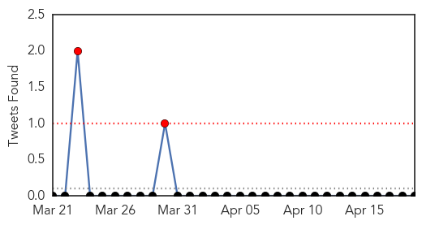

30 Day Trends
Web: 0 alerts, 0 warnings
Twitter: 1 alerts, 0 warnings
Top Articles:
- 0.989
- Measles confirmed in Quebec
- 0.981
- Disneyland
- 0.981
- Disneyland
- 0.973
- Large measles outbreak traced to Disneyland is declared over -- NationNews Barbados -- Local, Regional and International News nationnews.com
- 0.970
- Protect kids with immunizations - NUJournal.com
- 0.960
- ICYMI: Measles Confirmed in Florida
- 0.839
- No Jab No Play: Many disease deaths are preventable tragedies
- 0.826
- Two more measles cases confirmed in Indian County
- 0.775
- National anti-measles campaign for children under 5 continues
- 0.731
- Florida confirms measles in 2 unvaccinated adults
- 0.606
- the edge of knowledge
Top Tweets:
-
No tweets found for Apr 19, 2015
Web/News Articles

Tweets
Article Locations